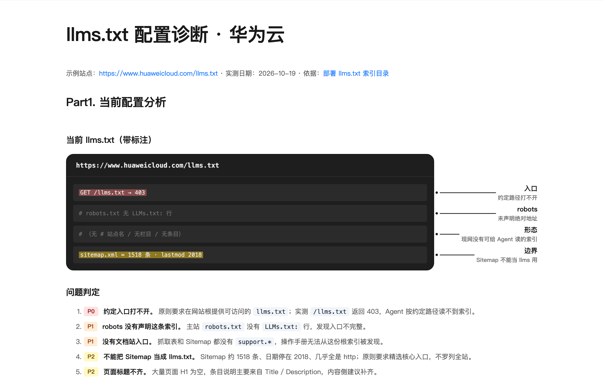

Skill 目录 / 部署 llms.txt 索引目录
部署 llms.txt 索引目录
这个 Skill 做什么
这是一份用于检查与优化 llms.txt 的 Skill 说明。它适合在站点需要面向大模型 / Agent 提供精选知识入口时使用：先诊断现有入口与候选页面，再输出报告，并给出一份建议版 llms.txt。依据见部署 llms.txt 索引目录。
- 诊断：检查
/llms.txt入口是否可发现，现有精选是否合理。 - 报告：生成独立 HTML 报告，说明当前入口、筛选依据与数据缺口；顶栏可导出 PDF，没有站点侧栏。
- 优化稿：在报告中附建议版
llms.txt，顶栏可单独下载。

如何触发
- 下载 Skill 包，放到 Agent 可读取的 skills 目录（如
.cursor/skills/llms-txt-generate/）。 - 在对话中用
/llms-txt-generate唤起；斜杠后写站点根 URL。没有地址时，Agent 会先追问。Sitemap 由 Skill 从 robots 或/sitemap.xml发现，不必另交。
| 字段 | 必填 | 说明 |
|---|---|---|
| 斜杠命令 | 是 | 用 /llms-txt-generate 明确唤起这个 Skill |
| 站点根 URL | 是 | 如 https://www.huaweicloud.com/ |
| 抓取表 CSV | 可选 | 有则精选更准。不交也能跑，改用 Sitemap 弱输入，报告会标明质量受限 |
用户可以这样输入
- /llms-txt-generate诊断 https://www.huaweicloud.com/
- 生成结果是一份独立 HTML（Part1 当前分析 + Part2 可下载优化稿）。可对照 华为云示例。